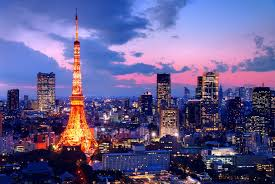

Popular Attraction: Tokyo Tower
Experience Tokyo
Location: Tokyo on Google Maps
About Tokyo
Tokyo is an exciting city where the old meets the new in the most fascinating way. With its historic temples like Senso-ji alongside the modern skyscrapers of Shibuya, there's so much to explore. What draws me to Tokyo is its lively atmosphere, unique cultural heritage, and the seamless combination of tradition and innovation. From the delicious food to cutting-edge technology and fashion, Tokyo offers a one-of-a-kind experience that makes it a place I can’t wait to visit.